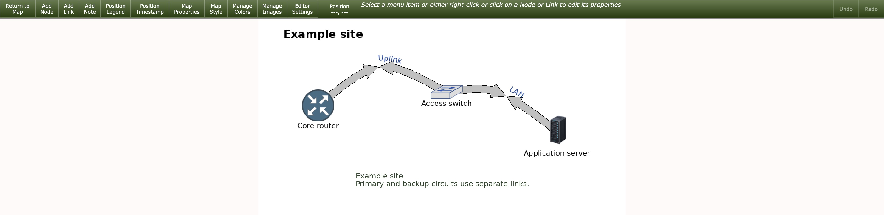
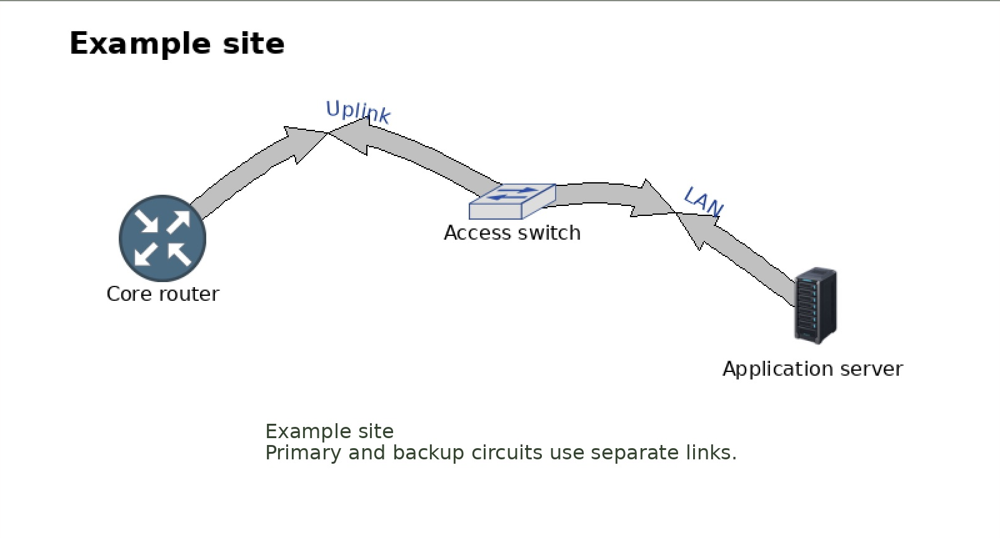
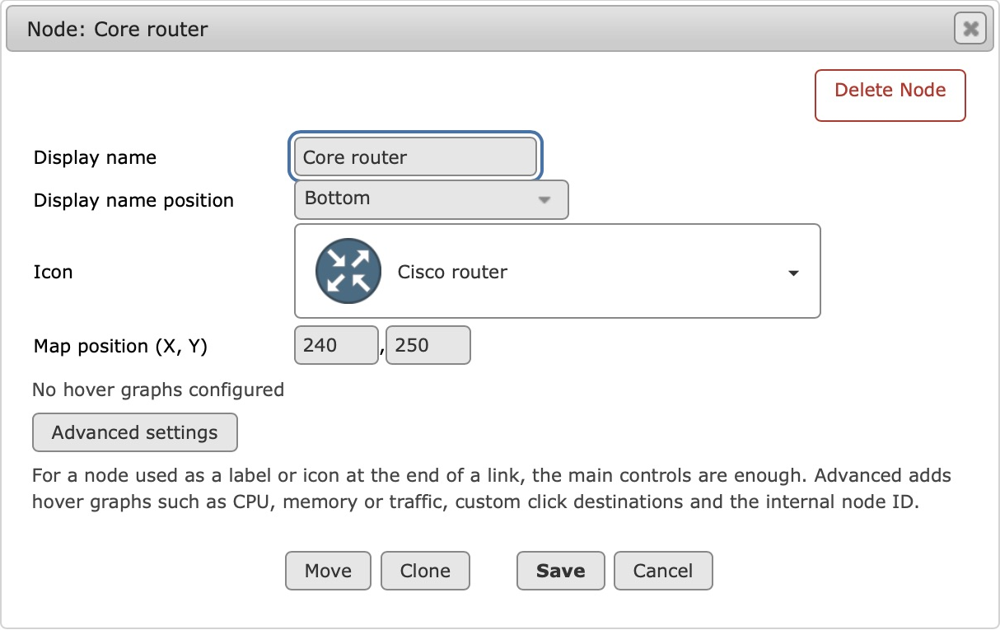
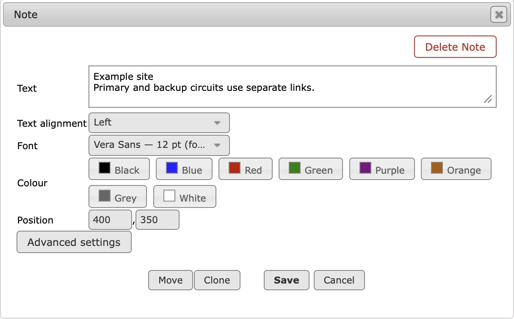

Using the map editor
Start by placing nodes and connecting them with links. For a traffic link, choose an interface and set its capacity in Link Properties. Use Additional hover graphs when you want another preview, or Advanced settings when you need custom measurements or URLs.
Opening, saving and placement
Enter from Edit Map in the viewer or map management. Return to Map/Manage keeps the navigation context. Choose a toolbar placement action, then click the canvas or requested endpoints. Save or cancel any open dialog before another action. Use Editor Settings for grid snapping and editing overlays; these are personal editor preferences, not map appearance settings.
A successful action saves the configuration and refreshes the editor snapshot. Poller-generated viewer output is separate. If a save reports an error, address it before relying on the preview. If another tab or administrator has changed the map, reopen it before editing further. Undo is useful for recent mistakes, but keep backups for recovery.
The editor toolbar
The green bar contains the editing actions. Choose a placement action, then follow the instruction shown in the bar. Click an existing object to open its properties.

| Control | What it does |
|---|---|
| Return to Map / Return to Manage | Leave the editor and return to the map viewer or management page, depending on where you opened it. |
| Add Node | Choose this action, then click the canvas to place a node. Click the new node to choose its name and icon. See Node properties. |
| Add Link | Click the first existing node, then the second, to connect them. Open Link Properties to assign the traffic interface and capacity. |
| Add Note | Click the canvas to place editable text. Set its wording, alignment and appearance in Note Properties. |
| Position Legend | Click the canvas to move the default traffic-colour legend. Click an existing legend to reposition that particular legend. |
| Position Timestamp | Click the canvas to move the map generation timestamp. Its wording and appearance are separate map settings. |
| Map Properties | Set the map title, canvas dimensions and background image, including its sizing mode. See Map Properties and backgrounds. |
| Map Style | Set this map’s default fonts, node labels, link appearance and legend style. Link Appearance Defaults includes Follow link curve. See Map Style. |
| Manage Colors | Set this map’s traffic colours, colour presets, background, outlines and comment colours. Link Appearance also controls high-load pulsing. See Manage Colors. |
| Manage Images | Upload and manage node icons and background images in separate libraries. Uploading makes an image available; choose it in Node Properties or Map Properties to use it. See Image libraries. |
| Editor Settings | Choose grid snapping and overlays for via points and relative node positions. These are personal editing preferences; Map Style controls the map’s appearance. |
| Position | Shows the pointer’s map coordinates to help with placement. This is a readout, not a button. |
| Help text | The message beside the controls explains the next click for the selected action. Follow it when placing objects or connecting nodes. |
| Undo / Redo | Move backwards or forwards through the last two saved map changes. An unavailable action is greyed out. See Undo and Redo for limits and protection against newer changes. |

Node properties
Click a node to edit its Display name, searchable Icon and Display name position. The label can sit above, over the centre or below the icon. Map position is the node's X/Y coordinate from the canvas's top-left corner, not the label position.
Move places the node at a new point; Clone creates a separate node. Open Advanced settings to see the internal ID or configure a custom click destination and hover graphs. CPU or memory graphs belong naturally on device nodes, but an extra link preview can also show them. Choosing a graph is separate from applying Add/Replace.
The right-click menu provides move, raw configuration and deletion actions. Delete Node removes that map node and its connected map links. It does not delete the Cacti device, RRD data or graphs.

Link properties: the main form
- Current interface identifies the applied graph and its RRD source. An internal graph ID identifies a Cacti graph, not a bandwidth value. A custom source may not resolve to a friendly interface.
- Bandwidth sets capacity into/out of the first endpoint. Use different values for asymmetric services. The checkbox copies the IN capacity to OUT. It does not change the measured data.
- Traffic interface searches the available interface sources. Choose a result and click Use interface to update the primary measurement, map-link click destination and main traffic hover graph together. Additional measured sources and extra hover previews are retained. Save applies changes.
- Via Style chooses curved or angled bends. Link Width controls arrow thickness. Tidy adjusts routing; Via lets you place a bend.
- IN Comment / OUT Comment adds text along each direction. The percentage sets the position along the link; it is not a traffic percentage. Fonts and following curves are configured under Map Style; comment colours are under Manage Colors. Comment Style chooses Edge, Centre or Use map default for this link.
Browse all opens the picker without a search term. Results load in pages of up to 100 with Next/Previous controls. Search matches a phrase in the data-source name, interface index or description. Device and port discovery depends on the names and cached metadata in your Cacti installation; this is not a multi-word query language or an aggregate-graph generator. Graph permissions still apply.
For a normal link, choose a standard interface traffic graph. An interface Errors graph measures errors, not traffic: assigning one does not convert it into bandwidth. Check the title, description, RRD and underlying data type when results look similar.

Additional hover graphs
The Link Properties form manages two hover graphs in total: the main traffic preview and one extra preview, such as CPU or latency. Open Additional hover graphs, optionally filter by graph type, choose a graph and apply it.
- Click Additional hover graphs below the comment controls. Search by device or graph name; use Filter by graph type to narrow the results.
- Select a result, then click Add hover graph. The extra appears below the picker with its graph name and available RRD filenames. A graph can use more than one RRD file; that still counts as one preview.
- To change the extra, select a different result and click Replace hover graphs. To clear it, click Remove graph beside the listed entry.
- Click Save in Link Properties to apply the changes to the map.
The applied extra is listed by graph title and RRD filename where Cacti can resolve them. Choosing a result in the search box does not change this list until you press Add or Replace. The listed entry is the preview that will be saved. Adding a preview changes neither the measured traffic nor the map-link click destination.

In the viewer, each recognised Cacti graph preview opens its own full graph when clicked. Clicking the map link itself uses the configured click destination. Custom image URLs do not necessarily have a corresponding Cacti graph to open. High-density previews request more image detail without enlarging their displayed size; collector and graph-rendering capabilities can require ordinary previews.
Opening Advanced settings closes the additional-graphs panel, and vice versa. The two-preview limit belongs to this link form; raw configuration and older maps can contain other arrangements. Do not use the form to assume that custom legacy hover lists have been converted.
Advanced settings: combine measurements
Click Advanced settings below the comment controls. For a normal traffic link, Use interface in the main form sets the source and graph URLs together; you do not need to fill these fields by hand. Open Advanced when you want to combine measurements, move the traffic labels or deliberately use different URLs.
Current graph is the Cacti graph ID associated with the link, such as 108; it is not an RRD filename or a traffic reading. Internal link ID identifies this link in the map configuration.
Advanced also contains Traffic Label Positions. Choose Custom positions to move the IN/OUT utilisation boxes for this link, or Use map default to inherit the positions from Map Style. This does not move the IN/OUT comment text. Comment Style, beside the comment controls in the main form, offers Edge, Centre or Use map default.

Extra measured sources add traffic to the link total; they do not add lines to a Cacti graph. The primary source is changed with Use interface in the main form. Remove source removes an extra source only.

To add a source, search under Add additional traffic sources, select
a result and click Add traffic source. Check that it appears in the list,
then Save. Selecting a search result alone does not add it. The editable text below the
list is the raw measured-source list (TARGET); it is for custom data-source
syntax, not hover image URLs. Removing an extra changes the map total after Save, without
deleting the Cacti interface, graph or RRD file.
| Action | Map reading | Hover/click graphs |
|---|---|---|
| Add another measured source | Adds its IN and OUT readings to the respective totals | Unchanged |
| Add a hover graph | Unchanged | Adds the extra preview |
| Use interface | Changes the primary source; retains extra sources | Changes main traffic preview and click destination; retains extra preview |
For example, 200M IN on one source plus 100M IN on another gives 300M IN. At 1G capacity this is 30%. Set a capacity that makes sense for the combined service. This is useful for parallel circuits or a logical bundle. A main circuit and standby backup are often clearer as separate links.
No combined Cacti graph is created. If users need historical totals, create a matching aggregate graph in Cacti separately, then set its click destination and hover image URLs. The form does not infer which aggregate graph matches your sources.
Advanced settings: URLs and custom data
Click destination URL controls where clicking the map link goes. Main hover graph URL is the first preview, normally supplied by Use interface. Additional graph URL(s) represents the same extra preview managed by Additional hover graphs. These fields accept URLs, not RRD paths. Leave them alone for a standard interface link; use them for a deliberate custom graph or page.

When copying a Cacti URL, use graph.php for a full graph page and
graph_image.php for the image shown on hover. The
local_graph_id must identify the graph you intend to show; the numbers in the
screenshot are examples from this installation. Changing a URL does not make that graph
measure the combined sources. If you need a historical total, create the matching
aggregate graph in Cacti first. Click Save after editing these fields.
Custom measurements require appropriate TARGET syntax and units. A non-traffic RRD may
need explicit data-source names and the gauge: prefix. See data sources. Changing an image or graph URL does not change TARGET or
capacity.
Map notes
Choose Add Note, click the canvas, enter text and save. Notes support multiple lines, left/centre/right alignment, font, colour and coordinates. Click an existing note to edit or move it. Alignment controls the text within the note; it is separate from a node's display-name position.
Notes use logical map coordinates and TrueType text rendering. Their configuration is
represented by label-only nodes with editor-note metadata; the legacy NOTES
directive is popup text and is a different feature. Use the note dialog rather than
manually changing its internal metadata.

Undo and Redo
Use the toolbar buttons or Ctrl/Cmd+Z and Ctrl/Cmd+Shift+Z after closing the current dialog. The last two saved map changes can be reversed and reapplied. Text fields retain normal text-editing shortcuts. Disabled controls mean no corresponding action is available.
History covers saved configuration changes: node/link/note creation and deletion, movement, via points, properties, styles, colours and raw object edits. Undoing a node deletion also restores its connected links. A new change after Undo clears Redo; no-op or failed saves do not consume a step.
History belongs to a map, browser tab and authenticated session. Reloading the same tab retains it; duplicate tabs have independent histories. External edits invalidate stale history instead of overwriting them. Included configurations and managed image references are checked before restoration. History is temporary, expires after four hours of inactivity, and is not a backup.
Uploads and library-file deletion, deleting configuration files, Cacti devices/graphs and personal editor preferences are outside Undo/Redo. Private server temporary storage must be writable. If the browser cannot coordinate history safely between tabs, editing remains available but Undo/Redo is disabled. See history troubleshooting.
Raw configuration and deletion
Edit Raw Configuration opens the underlying syntax for the selected object. It is also available in node/link right-click menus. Use it for settings beyond the form, with the configuration reference nearby. Cancel returns to properties without applying those raw edits. Check the saved result and any warnings after editing syntax directly.
The editor rewrites configuration from the settings it has read. Hand-written
# comments and original spacing are not preserved in a saved file. Keep a copy
of an annotated configuration before editing it; visible map notes and IN/OUT link comments
are separate settings and are saved.
Delete Link removes the selected map line. Delete Node also removes its connected lines. Both require confirmation and leave Cacti data intact. Deleting the configuration file is a separate management operation and has no editor Undo.